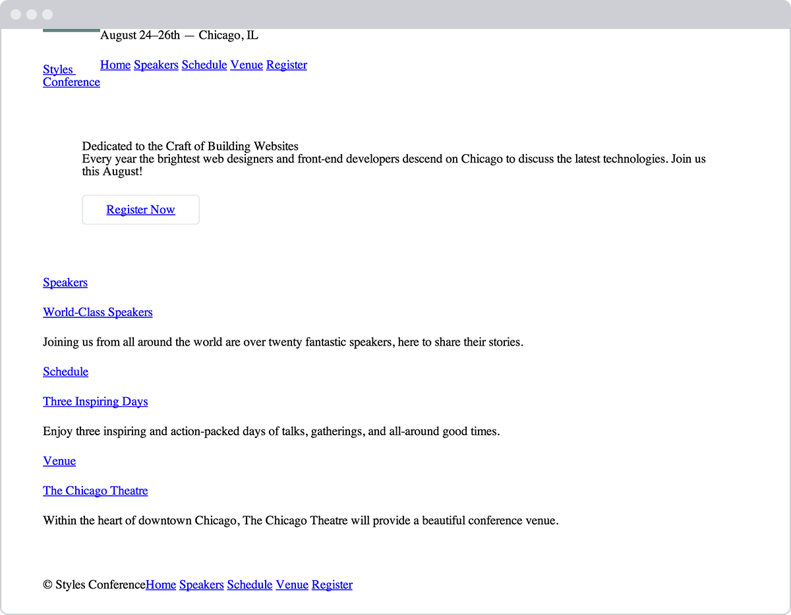

Positioning Content
Table of Contents
Positioning Content
One of the best things about CSS is that it gives us the ability to position content and elements on a page in nearly any imaginable way, bringing structure to our designs and helping make content more digestible.
There are a few different types of positioning within CSS, and each has its own application. In this chapter we're going to take a look at a few different use cases—creating reusable layouts and uniquely positioning one-off elements—and describe a few ways to go about each.
Positioning with Floats
One way to position elements on a page is with the float property. The
float property is pretty versatile and can be used in a number of
different ways.
Essentially, the float property allows us to take an element, remove
it from the normal flow of a page, and
position it to the left or right of its parent element. All other elements on
the page will then flow around the floated element. An <img> element
floated to the side of a few paragraphs of text, for example, will allow
the paragraphs to wrap around the image as necessary.
When the float property is used on multiple elements at the same time,
it provides the ability to create a layout by floating elements directly
next to or opposite each other, as seen in multiple-column layouts.
The float property accepts a few values; the two most popular values
are left and right, which allow elements to be floated to the left
or right of their parent element.
img { float: left; }
Floats in Practice
Let's create a common page layout with a header at the top, two columns
in the center, and a footer at the bottom. Ideally this page would be
marked up using the <header>, <section>, <aside>, and <footer>
elements. Inside the <body> element, the HTML may look like this:
<header>...</header> <section>...</section> <aside>...</aside> <footer>...</footer>
<header> <code><header></code> </header> <section> <code><section></code> </section> <aside> <code><aside></code> </aside> <footer> <code><footer></code> </footer>
code { background: #2db34a; border-radius: 6px; color: #fff; display: block; font: 14px/24px "Source Code Pro", Inconsolata, "Lucida Console", Terminal, "Courier New", Courier; padding: 24px 15px; text-align: center; } header, section, aside, footer { margin: 0 1.5% 24px 1.5%; } footer { margin-bottom: 0; }
<iframe src="./examples/demo-01/index.html"> </iframe>
Here the <section> and <aside> elements, as block-level elements,
will be stacked on top of one another by default. However, we want these
elements to sit side by side. By floating the <section> to the left
and the <aside> to the right, we can position them as two columns
sitting opposite one another. Our CSS should look like this:
section { float: left; } aside { float: right; }
For reference, when an element is floated, it will float all the way to the edge of its parent element. If there isn't a parent element, the floated element will then float all the way to the edge of the page.
When we float an element, we take it out of the normal flow of the HTML
document. This causes the width of that element to default to the width
of the content within it. Sometimes, such as when we're creating columns
for a reusable layout, this behavior is not desired. It can be corrected
by adding a fixed width property value to each column. Additionally,
to prevent floated elements from touching one another, causing the
content of one to sit directly next to the content of the other, we can
use the margin property to create space between elements.
Here, we are extending the previous code block, adding a margin and
width to each column to better shape our desired outcome.
section { float: left; margin: 0 1.5%; width: 63%; } aside { float: right; margin: 0 1.5%;------ width: 30%; }
<header> <code><header></code> </header> <section> <code><section> <br> float: left;</code> </section> <aside> <code><aside> <br> float: right;</code> </aside> <footer> <code><footer></code> </footer>
code { background: #2db34a; border-radius: 6px; color: #fff; display: block; font: 14px/24px "Source Code Pro", Inconsolata, "Lucida Console", Terminal, "Courier New", Courier; padding: 24px 15px; text-align: center; } header, section, aside, footer { margin: 0 1.5% 24px 1.5%; } section { float: left; width: 63%; } aside { float: right; width: 30%; } footer { clear: both; margin-bottom: 0; }
<iframe src="./examples/demo-02/index.html"> </iframe>
Floats May Change an Element's Display Value
When floating an element, it is also important to recognize that an
element is removed from the normal flow of a page, and that may change
an element's default display value. The float property relies on an
element having a display value of block, and may alter an element's
default display value if it is not already displayed as a block-level
element.
For example, an element with a display value of inline, such as the
<span> inline-level element, ignores any height or width property
values. However, should that inline-level element be floated, its
display value will be changed to block, and it may then accept
height or width property values.
As we float elements we must keep an eye on how their display property
values are affected.
With two columns we can float one column to the left and another to the
right, but with more columns we must change our approach. Say, for
example, we'd like to have a row of three columns between our <header>
and <footer> elements. If we drop our <aside> element and use three
<section> elements, our HTML might look like this:
#+BEGINSRC html <header>…</header>
When floating an element, it is also important to recognize that an
element is removed from the normal flow of a page, and that may change
an element's default display value. The float property relies on an
element having a display value of block, and may alter an element's
default display value if it is not already displayed as a block-level
element.
For example, an element with a display value of inline, such as the
<span> inline-level element, ignores any height or width property
values. However, should that inline-level element be floated, its
display value will be changed to block, and it may then accept
height or width property values.
As we float elements we must keep an eye on how their display property
values are affected.
With two columns we can float one column to the left and another to the
right, but with more columns we must change our approach. Say, for
example, we'd like to have a row of three columns between our <header>
and <footer> elements. If we drop our <aside> element and use three
<section> elements, our HTML might look like this:
<header>...</header> <section>...</section> <section>...</section> <section>...</section> <footer>...</footer>
To position these three <section> elements in a three-column row,
instead of floating one column to the left and one column to the right,
we'll float all three <section> elements to the left. We'll also need
to adjust the width of the <section> elements to account for the
additional columns and to get them to sit one next to the other.
section { float: left; margin: 0 1.5%; width: 30%; }
Here we have three columns, all with equal width and margin values and
all floated to the left.
<header> <code><header></code> </header> <section> <code><section> <br> float: left;</code> </section> <section> <code><section> <br> float: left;</code> </section> <section> <code><section> <br> float: left;</code> </section> <footer> <code><footer></code> </footer>
code { background: #2db34a; border-radius: 6px; color: #fff; display: block; font: 14px/24px "Source Code Pro", Inconsolata, "Lucida Console", Terminal, "Courier New", Courier; padding: 24px 15px; text-align: center; } header, section, aside, footer { margin: 0 1.5% 24px 1.5%; } section { float: left; width: 30%; } footer { clear: both; margin-bottom: 0; }
<iframe src="./examples/demo-03/index.html"> </iframe>
Clearing & Containing Floats
The float property was originally designed to allow content to wrap
around images. An image could be floated, and all of the content
surrounding that image could then naturally flow around it. Although
this works great for images, the float property was never actually
intended to be used for layout and positioning purposes, and thus it
comes with a few pitfalls.
One of those pitfalls is that occasionally the proper styles will not render on an element that it is sitting next to or is a parent element of a floated element. When an element is floated, it is taken out of the normal flow of the page, and, as a result, the styles of elements around that floated element can be negatively impacted.
Often margin and padding property values aren't interpreted
correctly, causing them to blend into the floated element; other
properties can be affected, too.
Another pitfall is that sometimes unwanted content begins to wrap around a floated element. Removing an element from the flow of the document allows all the elements around the floated element to wrap and consume any available space around the floated element, which is often undesired.
With our previous two-column example, after we floated the <section>
and <aside> elements, and before we set a width property value on
either of them, the content within the <footer> element would have
wrapped in between the two floated elements above it, filling in any
available space. Consequently, the <footer> element would have sat in
the gutter between the <section> and <aside> elements, consuming the
available space.
<header> <code><header></code> </header> <section> <code><section> <br> float: left;</code> </section> <aside> <code><aside> <br> float: right;</code> </aside> <footer> <code><footer></code> </footer>
code { background: #2db34a; border-radius: 6px; color: #fff; display: block; font: 14px/24px "Source Code Pro", Inconsolata, "Lucida Console", Terminal, "Courier New", Courier; padding: 24px 15px; text-align: center; } header, section, aside, footer { margin: 0 1.5% 24px 1.5%; } section { float: left; } aside { float: right; } section, aside, footer { margin-bottom: 0; }
<iframe src="./examples/demo-04/index.html"> </iframe>
To prevent content from wrapping around floated elements, we need to clear, or contain, those floats and return the page to its normal flow. We'll proceed by looking at how to clear floats, and then we'll take a look at how to contain floats.
Clearing Floats
Clearing floats is accomplished using the clear property, which
accepts a few different values: the most commonly used values being
left, right, and both.
div { clear: left; }
The left value will clear left floats, while the right value will
clear right floats. The both value, however, will clear both left and
right floats and is often the most ideal value.
Going back to our previous example, if we use the clear property with
the value of both on the <footer> element, we are able to clear the
floats. It is important that this clear be applied to an element
appearing after the floated elements, not before, to return the page to
its normal flow.
footer { clear: both; }
<header> <code><header></code> </header> <section> <code><section> <br> float: left;</code> </section> <aside> <code><aside> <br> float: right;</code> </aside> <footer> <code><footer> <br> clear: both;</code> </footer>
code { background: #2db34a; border-radius: 6px; color: #fff; display: block; font: 14px/24px "Source Code Pro", Inconsolata, "Lucida Console", Terminal, "Courier New", Courier; padding: 24px 15px; text-align: center; } header, section, aside, footer { margin: 0 1.5% 24px 1.5%; } section { float: left; width: 63%; } aside { float: right; width: 30%; } footer { clear: both; margin-bottom: 0; }
<iframe src="./examples/demo-05/index.html"> </iframe>
Containing Floats
Rather than clearing floats, another option is to contain the floats. The outcomes of containing floats versus those of clearing them are nearly the same; however, containing floats does help to ensure that all of our styles will be rendered properly.
To contain floats, the floated elements must reside within a parent
element. The parent element will act as a container, leaving the flow of
the document completely normal outside of it. The CSS for that parent
element, represented by the group class below, is shown here:
.group:before, .group:after { content: ""; display: table; } .group:after { clear: both; } .group { clear: both; *zoom: 1; }
There's quite a bit going on here, but essentially what the CSS is doing
is clearing any floated elements within the element with the class of
group and returning the flow of the document back to normal.
More specifically, the :before and :after pseudo-elements, as
mentioned in the Lesson 4 exercise, are dynamically generated elements
above and below the element with the class of group. Those elements do
not include any content and are displayed as table-level elements,
much like block-level elements. The dynamically generated element after
the element with the class of group is clearing the floats within the
element with the class of group, much like the clear from before.
And lastly, the element with the class of group itself also clears any
floats that may appear above it, in case a left or right float may
exist. It also includes a little trickery to get older browsers to play
nicely.
It is more code than the clear: both; declaration alone, but it can
prove to be quite useful.
Looking at our two-column page layout from before, we could wrap the
<section> and <aside> elements with a parent element. That parent
element then needs to contain the floats within itself. The code would
look like this:
<header>...</header> <div class="group"> <section>...</section> <aside>...</aside> </div> <footer>...</footer>
.group:before, .group:after { content: ""; display: table; } .group:after { clear: both; } .group { clear: both; *zoom: 1; } section { float: left; margin: 0 1.5%; width: 63%; } aside { float: right; margin: 0 1.5%; width: 30%; }
<header> <code><header></code> </header> <div class="group"> <code class="default"><section="group"></code> <section> <code><section> <br> float: left;</code> </section> <aside> <code><aside> <br> float: right;</code> </aside> </div> <footer> <code><footer> <br> clear: both;</code> </footer>
code { background: #2db34a; border-radius: 6px; color: #fff; display: block; font: 14px/24px "Source Code Pro", Inconsolata, "Lucida Console", Terminal, "Courier New", Courier; padding: 24px 15px; text-align: center; } .default { background: none; color: #666; } .group:before, .group:after { content: ""; display: table; } .group:after { clear: both; } .group { background: #eaeaed; border-radius: 6px; clear: both; *zoom: 1; } .group, header, section, aside, footer { margin: 0 1.5% 24px 1.5%; } section { float: left; width: 63%; } aside { float: right; width: 30%; } footer { margin-bottom: 0; }
<iframe src="./examples/demo-06/index.html"> </iframe>
The technique shown here for containing elements is know as a "clearfix"
and can often be found in other websites with the class name of
clearfix or cf. We've chosen to use the class name of group,
though, as it is representing a group of elements, and better expresses
the content.
As elements are floated, it is important to keep note of how they affect the flow of a page and to make sure the flow of a page is reset by either clearing or containing the floats as necessary. Failing to keep track of floats can cause quite a few headaches, especially as pages begin to have multiple rows of multiple columns.
In Practice
Let's return to the Styles Conference website to try floating some content.
First things first, before we begin floating any elements, let's provide a way to contain those floats by adding the clearfix to our CSS. Within the
main.cssfile, just below our grid styles, let's add the clearfix under the class namegroup, just like before./* ======================================= Clearfix ======================================= */ .group:before, .group:after { content: ""; display: table; } .group:after { clear: both; } .group { clear: both; *zoom: 1; }Now that we can contain floats, let's float the primary
<h1>within the<header>element to the left and allow all of the other content in the header to wrap to the right of it.To do this, let's add a class of
logoto the<h1>element. Then within our CSS, let's add a new section of styles for the primary header. In this section we'll select the<h1>element with thelogoclass and thenfloatit to the left.<h1 class="logo"> <a href="index.html">Styles Conference</a> </h1>
/* ======================================== Primary header ======================================== */ .logo { float: left; }While we're at it, let's add a little more detail to our logo. We'll begin by placing a
<br>element, or line break, between the word "Styles" and the word "Conference" to force the text of our logo to sit on two lines.Within the CSS, let's add a border to the top of our logo and some vertical
paddingto give the logo breathing room.<h1 class="logo"> <a href="index.html">Styles <br> Conference</a> </h1>
.logo { border-top: 4px solid #648880; padding: 40px 0 22px 0; float: left; }
- Because we floated the
<h1>element, we'll want to contain thatfloat. The closest parent element of the<h1>element is the<header>element, so we'll want to add the class ofgroupto the<header>element. Doing this applies the clearfix styles we set up earlier to the<header>element.
<header class="container group"> ... </header>
The
<header>element is taking shape, so let's take a look at the<footer>element. Much like we did with the<header>element, we'll float our copyright to the left within the<small>element and let all other elements wrap around it to the right.Unlike the
<header>element, though, we're not going to use a class directly on the floated element. This time we're going to apply a class to the parent of the floated element and use a unique CSS selector to select the element and then float it.Let's start by adding the class of
primary-footerto the<footer>element. Because we know we'll be floating an element within the<footer>element, we should also add the class ofgroupwhile we're at it.<footer class="primary-footer container group"> ... </footer>
Now that the class of
primary-footeris on the<footer>element, we can use that class to prequalify the<small>element with CSS. We'll want to select andfloatthe<small>element to theleft. Let's not forget to create a new section within ourmain.cssfile for these primary footer styles./* ======================================== Primary footer ======================================== */ .primary-footer small { float: left; }To review, here we are selecting the
<small>element, which must reside within an element with the class attribute value ofprimary-footer, such as our<footer>element, for example.Lastly, let's put some
paddingon the top and bottom of the<footer>element to help separate it a little more from the rest of the page. We can do this directly by using theprimary-footerclass with a class selector..primary-footer { padding-bottom: 44px; padding-top: 44px; }
With all of these changes to the <header> and <footer> elements, we
have to be sure to make them on every page, not just the index.html
page.

With a few floats, the <header> and <footer> elements on our Styles
Conference home page are coming together.
Positioning with Inline-Block
In addition to using floats, another way we can position content is by
using the display property in conjunction with the inline-block
value. The inline-block method, as we'll discuss, is primarily helpful
for laying out pages or for placing elements next to one another within
a line.
Recall that the inline-block value for the display property will
display elements within a line while allowing them to accept all box
model properties, including height, width, padding, border, and
margin. Using inline-block elements allows us to take full advantage
of the box model without having to worry about clearing any floats.
Inline-Block in Practice
Let's take a look at our three-column example from before. We'll start by keeping our HTML just as it is:
<header>...</header> <section>...</section> <section>...</section> <section>...</section> <footer>...</footer>
Now instead of floating our three <section> elements, we'll change
their display values to inline-block, leaving the margin and
width properties from before alone. Our resulting CSS will look like
this:
section {
display: inline-block;
margin: 0 1.5%;
width: 30%;
}
Unfortunately, this code alone doesn't quite do the trick, and the last
<section> element is pushed to a new row. Remember, because
inline-block elements are displayed on the same line as one another,
they include a single space between them. When the size of each single
space is added to the width and horizontal margin values of all the
elements in the row, the total width becomes too great, pushing the last
<section> element to a new row. In order to display all of the
<section> elements on the same row, the white space between each
<section> element must be removed.
<header> <code><header></code> </header> <section> <code><section> <br> display: <br> inline-block;</code> </section> <section> <code><section> <br> display: <br> inline-block;</code> </section> <section> <code><section> <br> display: <br> inline-block;</code> </section> <footer> <code><footer></code> </footer>
code { background: #2db34a; border-radius: 6px; color: #fff; display: block; font: 14px/24px "Source Code Pro", Inconsolata, "Lucida Console", Terminal, "Courier New", Courier; padding: 24px 15px; text-align: center; } header, section, aside, footer { margin: 0 1.5% 24px 1.5%; } section { display: inline-block; width: 30%; } footer { margin-bottom: 0; }
<iframe src="./examples/demo-07/index.html"> </iframe>
Removing Spaces Between Inline-Block Elements
There are a number of ways to remove the space between inline-block elements, and some are more complex than others. We are going to focus on two of the easiest ways, both of which happen inside HTML.
The first solution is to put each new <section> element's opening tag
on the same line as the previous <section> element's closing tag.
Rather than using a new line for each element, we'll end and begin
elements on the same line. Our HTML could look like this:
<header>...</header> <section> ... </section><section> ... </section><section> ... </section> <footer>...</footer>
Writing inline-block elements this way ensures that the space between inline-block elements within HTML doesn't exist; consequently, the space will not appear when the page is rendered.
<header> <code><header></code> </header> <section> <code><section> <br> display: <br> inline-block;</code> </section><section> <code><section> <br> display: <br> inline-block;</code> </section><section> <code><section> <br> display: <br> inline-block;</code> </section> <footer> <code><footer></code> </footer>
code { background: #2db34a; border-radius: 6px; color: #fff; display: block; font: 14px/24px "Source Code Pro", Inconsolata, "Lucida Console", Terminal, "Courier New", Courier; padding: 24px 15px; text-align: center; } header, section, aside, footer { margin: 0 1.5% 24px 1.5%; } section { display: inline-block; width: 30%; } footer { margin-bottom: 0; }
<iframe src="./examples/demo-08/index.html"> </iframe>
Another way to remove the white space between inline-block elements is to open an HTML comment directly after an inline-block element's closing tag. Then, close the HTML com- ment immediately before the next inline-block element's opening tag. Doing this allows inline-block elements to begin and end on separate lines of HTML and "comments out" any potential spaces between the elements. The resulting code would look like this:
<header>...</header> <section> ... </section><!-- --><section> ... </section><!-- --><section> ... </section> <footer>...</footer>
Neither of these options is perfect, but they are helpful. I tend to favor using comments for better organization, but which option you choose is entirely up to you.
Creating Reusable Layouts
When building a website, it is always best to write modular styles that may be reused elsewhere, and reusable layouts are high on the list of reusable code. Layouts can be created using either floats or inline-block elements, but which works best and why?
Whether it's better to use floats or inline-block elements to lay out the structure of a page is open to debate. My approach is to use inline-block elements to create the grid—or layout—of a page and to then use floats when I want content to wrap around a given element (as floats were intended to do with images). Generally, I also find inline-block elements easier to work with.
That said, use whatever works best for you. If you are comfortable with one approach over the other, then go for it.
Currently there are new CSS specifications in the works—specifically
flex- and grid- based properties—that will help address how to
best lay out pages. Keep an eye out for these methods as they begin to
surface.
In Practice
With a solid understanding of reusable layouts, the time has come to implement one in our Styles Conference website.
For the Styles Conference website, we'll create a three-column reusable layout using inline-block elements. We'll do so in a way that allows us to have three columns of equal width or two columns with the total width split between them, two-thirds in one and one-third in the other.
To begin, we'll create classes that define the
widthof these columns. The two classes we'll create arecol-1-3, for one-third, andcol-2-3, for two-thirds. Within the grid section of ourmain.cssfile, let's go ahead and define these classes and their corresponding widths..col-1-3 { width: 33.33%; } .col-2-3 { width: 66.66%; }
We'll want both of the columns to be displayed as inline-block elements. We'll need to make sure that their vertical alignment is set to the
topof each column, too.Let's create two new selectors that will share the display and vertical-alignment property styles.
.col-1-3, .col-2-3 { display: inline-block; vertical-align: top; }Looking at the CSS again, we've created two class selectors,
col-1-3andcol-2-3, that are separated with a comma. The comma at the end of the first selector signifies that another selector is to follow. The second selector is followed by the opening curly bracket,{, which signifies that style declarations are to follow. By comma-separating the selectors, we can bind the same styles to multiple selectors at one time.We'll want to put some space in between each of the columns to help break up the content. We can accomplish this by putting horizontal
paddingon each of the columns.This works well; however, when two columns are sitting next to one another, the width of the space between them will be double that of the space from the outside columns to the edge of the row. To balance this we'll place all of our columns within a grid and add the same padding from our columns to that grid.
Let's use a class name of
gridto identify our grid, and then let's identify the same horizontalpaddingfor our grid,col-1-3, andcol-2-3classes. With commas separating our selectors again, our CSS looks like this:.grid, .col-1-3, .col-2-3 { padding-left: 15px; padding-right: 15px; }
When we're setting up the horizontal
padding, we'll need to be careful. Remember, in the last lesson we created a container element, known by the class ofcontainer, to center all of our content on a page within a960-pixel-wide element. Currently if we were to put an element with the class ofgridinside an element with the class ofcontainer, their horizontal paddings would add to one another, and our columns would not appear proportionate to the width of the rest of the page.We don't want this to happen, so instead, we'll have to share some of the styles from the
containerrule set with thegridrule set. Specifically, we'll need to share thewidthproperty and values (to make sure our page stays fixed at960pixels wide) and themarginproperty and values (to center any element with the class of grid on the page).We'll accomplish this by breaking up the old
containerrule set into the following:.container, .grid { margin: 0 auto; width: 960px; } .container { padding-left: 30px; padding-right: 30px; }
Now any element with the class of
containeror grid will be960pixels wide and centered on the page. Additionally, we've preserved the existing horizontal padding for any element with the class ofcontainerby moving it into a new, separate rule set.All right—all of the heavy lifting needed to get our reusable grid styles into place is finished. Now it's time to work in our HTML and to see how these classes perform.
We'll begin with the teasers on the home page, within our
index.htmlfile, aligning them into three columns. Currently, the teasers are wrapped in a<section>element with the class ofcontainer. We'll want to change that class fromcontainertogridso that we can begin placing columns within it.<section class="grid"> ... </section>
Next, we'll want to add a class of
col-1-3to each of the<section>elements within the<section>element with the class ofgrid.<section class="grid"> <section class="col-1-3"> ... </section> <section class="col-1-3"> ... </section> <section class="col-1-3"> ... </section> </section>
And lastly, because each of our columns is an inline-block element, we'll want to make sure we remove the empty white space between them. We'll use comments to do this, and we'll add a little bit of documentation noting each upcoming section while we're at it to better organize our code.
<section class="grid"> <!-- Speakers --> <section class="col-1-3"> ... </section><!-- Schedule --><section class="col-1-3"> ... </section><!-- Venue --><section class="col-1-3"> ... </section> </section>
To review, on line 3 we leave a comment identifying the "Speakers"
section to follow. At the end of line 7, we open a comment
immediately after the closing </section> tag. Within that comment,
on line 9 we identify the "Schedule" section to come. We then close
the comment at the beginning of line 11, just before the opening
<section> tag. This same comment structure reappears on lines 13
through 17 between the two <section> elements, right before the
"Venue" section. In all, we've commented out any potential white
space between the columns while also using those comments to identify
our sections.
We now have a reusable three-column grid that supports multiple arrangements, using both one-third- and two-thirds-width columns. Our home page now has three columns, breaking up all the different teasers.

Our Styles Conference home page now includes a three-column layout
Uniquely Positioning Elements
Every now and then we'll want to precisely position an element, but floats or
inline-block elements won't do the trick. Floats, which remove an element
from the flow of a page, often produce unwanted results as surrounding
elements flow around the floated element. Inline-block elements, unless we're
creating columns, can be fairly awkward to get into the proper position. For
these situations we can use the position property in connection with box
offset properties.
The position property identifies how an element is positioned on a
page and whether or not it will appear within the normal flow of a
document. This is used in conjunction with the box offset
properties---top, right, bottom, and left—which identify
exactly where an element will be positioned by moving elements in a
number of different directions.
By default every element has a position value of static, which means
that it exists in the normal flow of a document and it doesn't accept
any box offset properties. The static value is most commonly
overwritten with a relative or absolute value, which we'll examine
next.
Relative Positioning
The relative value for the position property allows elements to
appear within the normal flow a page, leaving space for an element as
intended while not allowing other elements to flow around it; however,
it also allows an element's display position to be modified with the box
offset properties. For example, consider the following HTML and CSS:
<div>...</div> <div class="offset">...</div> <div>...</div>
div { height: 100px; width: 100px; } .offset { left: 20px; position: relative; top: 20px; }
<div> <code><div></code> </div> <div class="offset"> <code><div class= <br> "offset"></code> </div> <div> <code><div></code> </div>
code { color: #666; font: 14px/24px "Source Code Pro", Inconsolata, "Lucida Console", Terminal, "Courier New", Courier; } div, .offset code { border-radius: 6px; } div { background: #eaeaed; height: 62px; padding-top: 38px; text-align: center; width: 100px; } .offset { background: none; border: 2px dashed #9799a7; height: 100px; padding: 0; } .offset code { background: #2db34a; color: #fff; display: block; height: 74px; left: 20px; padding-top: 26px; position: relative; text-align: center; top: 20px; width: 100px; }
<iframe src="./examples/demo-09/index.html"> </iframe>
Here the second <div> element, the element with the class of offset,
has a position value of relative and two box offset properties,
left and top. This preserves the original position of the element,
and other elements are not allowed to move into this space.
Additionally, the box offset properties reposition the element, pushing
it 20 pixels from the left and 20 pixels from the top of its
original location.
With relatively positioned elements, it's important to know that the box
offset properties identify where an element will be moved from given its
original position. Thus, the left property with a value of 20 pixels
will actually push the element towards the right, from the left, 20
pixels. The top property with a value of 20 pixels, then, will push
an element towards the bottom, from the top, 20 pixels.
When we position the element using the box offset properties, the
element overlaps the element below it rather than moving that element
down as the margin or padding properties would.
Absolute Positioning
The absolute value for the position property is different from the
relative value in that an element with a position value of
absolute will not appear within the normal flow of a document, and the
original space and position of the absolutely positioned element will
not be preserved.
Additionally, absolutely positioned elements are moved in relation to
their closest relatively positioned parent element. Should a relatively
positioned parent element not exist, the absolutely positioned element
will be positioned in relation to the <body> element. That's quite a
bit of information; let's take a look at how this works inside some
code:
<section> <div class="offset">...</div> </section>
section { position: relative; } div { position: absolute; right: 20px; top: 20px; }
<section> <code><section> <br> position: relative;</code> <div class="offset"> <code><div class="offset"> <br> position: absolute; <br> right: 20px; <br> top: 20px;</code> </div> </section>
code { color: #666; font: 14px/24px "Source Code Pro", Inconsolata, "Lucida Console", Terminal, "Courier New", Courier; } section, .offset, .offset code { border-radius: 6px; padding: 24px 30px; } section { background: #eaeaed; height: 145px; position: relative; } .offset, .offset code { height: 96px; position: absolute; width: 160px; } .offset { border: 2px dashed #9799a7; right: 0; top: 0; } .offset code { background: #2db34a; color: #fff; display: block; right: 20px; top: 20px; }
<iframe src="./examples/demo-10/index.html"> </iframe>
In this example the <section> element is relatively positioned but
doesn't include any box offset properties. Consequently its position
doesn't change. The <div> element with a class of offset includes a
position value of absolute. Because the <section> element is the
closest relatively positioned parent element to the <div> element, the
<div> element will be positioned in relation to the <section>
element.
With relatively positioned elements, the box offset properties identify in which direction an element would be moved in relation to itself. With absolutely positioned elements, the box offset properties identify in which direction an element will be moved in relation to its closest relatively positioned parent element.
As a result of the right and top box offset properties, the <div>
element will appear 20 pixels from the right and 20 pixels from
the top of the <section>.
Because the <div> element is absolutely positioned, it does not sit
within the normal flow of the page and will overlap any surrounding
elements. Additionally, the original position of the <div> is not
preserved, and other elements are able to occupy that space.
Typically, most positioning can be handled without the use of the
position property and box offset properties, but in certain cases they
can be extremely helpful.
Flexbox layout
The Flexbox Layout (Flexible Box) module (a W3C Candidate Recommendation as of October 2017) aims at providing a more efficient way to lay out, align and distribute space among items in a container, even when their size is unknown and/or dynamic (thus the word "flex").
The main idea behind the flex layout is to give the container the ability to alter its items' width/height (and order) to best fill the available space (mostly to accommodate to all kind of display devices and screen sizes). A flex container expands items to fill available free space, or shrinks them to prevent overflow.
Most importantly, the flexbox layout is direction-agnostic as opposed to the regular layouts (block which is vertically-based and inline which is horizontally-based). While those work well for pages, they lack flexibility (no pun intended) to support large or complex applications (especially when it comes to orientation changing, resizing, stretching, shrinking, etc.).
Basics & Terminology
Since flexbox is a whole module and not a single property, it involves a lot of things including its whole set of properties. Some of them are meant to be set on the container (parent element, known as "flex container") whereas the others are meant to be set on the children (said "flex items").
If "regular" layout is based on both block and inline flow directions, the flex layout is based on "flex-flow directions". Please have a look at this figure from the specification, explaining the main idea behind the flex layout.
Figure 3: Flex size
Properties for the Parent (flex container)
Figure 4: Properties for the Parent (flex container)
display
This defines a flex container; inline or block depending on the given value. It enables a flex context for all its direct children
.container { display: flex; /* or inline-flex */ }
Note that CSS columns have no effect on a flex container.
flex-direction
This establishes the main-axis, thus defining the direction flex items are placed in the flex container. Flexbox is (aside from optional wrapping) a single-direction layout concept. Think of flex items as primarily laying out either in horizontal rows or vertical columns.
.container { flex-direction: row | row-reverse | column | column-reverse; }
row(default): left to right in ltr; right to left in rtlrow-reverse: right to left in ltr; left to right in rtlcolumn: same as row but top to bottomcolumn-reverse: same as row-reverse but bottom to top-
flex-wrap
By default, flex items will all try to fit onto one line. You can change that and allow the items to wrap as needed with this property.
.container{ flex-wrap: nowrap | wrap | wrap-reverse; }
nowrap(default): all flex items will be on one linewrap: flex items will wrap onto multiple lines, from top to bottom.wrap-reverse: flex items will wrap onto multiple lines from bottom to top.
flex-flow (Applies to: parent flex container element)
This is a shorthand flex-direction and flex-wrap properties, which
together define the flex container's main and cross axes. Default is
row nowrap.
flex-flow: <‘flex-direction’> || <‘flex-wrap’>
justify-content
This defines the alignment along the main axis. It helps distribute extra free space left over when either all the flex items on a line are inflexible, or are flexible but have reached their maximum size. It also exerts some control over the alignment of items when they overflow the line.
flex-start(default): items are packed toward the start lineflex-end: items are packed toward the end linecenter: items are centered along the linespace-between: items are evenly distributed in the line; first item is on the start line, last item on the end linespace-around: items are evenly distributed in the line with equal space around them. Note that visually the spaces aren't equal, since all the items have equal space on both sides. The first item will have one unit of space against the container edge, but two units of space between the next item because that next item has its own spacing that applies.space-evenly: items are distributed so that the spacing between any two items (and the space to the edges) is equal.
align-items
This defines the default behavior for how flex items are laid out along
the cross axis on the current line. Think of it as the justify-content
version for the cross-axis (perpendicular to the main-axis).
.container { align-items: stretch | flex-start | flex-end | center | baseline; }
stretch(default): stretch to fill the container (still respect min-width/max-width)flex-start: cross-start margin edge of the items is placed on the cross-start lineflex-end: cross-end margin edge of the items is placed on the cross-end linecenter: items are centered in the cross-axisbaseline: items are aligned such as their baselines align
align-content
This aligns a flex container's lines within when there is extra space in
the cross-axis, similar to how justify-content aligns individual items
within the main-axis.
Note: this property has no effect when there is only one line of flex items.
.container { align-content: flex-start | flex-end | center | space-between | space-around | stretch; }
flex-start: lines packed to the start of the containerflex-end: lines packed to the end of the containercenter: lines packed to the center of the containerspace-between: lines evenly distributed; the first line is at the start of the container while the last one is at the endspace-around: lines evenly distributed with equal space around each linestretch(default): lines stretch to take up the remaining space
Properties for the items (flex items)
Figure 10: Properties for the children
order
By default, flex items are laid out in the source order. However, the
order property controls the order in which they appear in the flex
container.
.item { order: <integer>; /* default is 0 */ }
flex-grow
This defines the ability for a flex item to grow if necessary. It accepts a unitless value that serves as a proportion. It dictates what amount of the available space inside the flex container the item should take up.
If all items have flex-grow set to 1, the remaining space in the
container will be distributed equally to all children. If one of the
children has a value of 2, the remaining space would take up twice as
much space as the others (or it will try to, at least).
.item { flex-grow: <number>; /* default 0 */ }
Negative numbers are invalid.
flex-shrink
This defines the ability for a flex item to shrink if necessary.
.item { flex-shrink: <number>; /* default 1 */ }
Negative numbers are invalid.
flex-basis
This defines the default size of an element before the remaining space
is distributed. It can be a length (e.g. 20%, 5rem, etc.) or a keyword.
The auto keyword means "look at my width or height property" (which
was temporarily done by the main-size keyword until deprecated). The
content keyword means "size it based on the item's content" - this
keyword isn't well supported yet, so it's hard to test and harder to
know what its brethren max-content, min-content, and fit-content
do.
.item { flex-basis: <length> | auto; /* default auto */ }
If set to 0, the extra space around content isn't factored in. If set
to auto, the extra space is distributed based on its flex-grow
value.
flex
This is the shorthand for flex-grow, flex-shrink and flex-basis
combined. The second and third parameters (flex-shrink and
flex-basis) are optional. Default is 0 1 auto.
.item { flex: none | [ <'flex-grow'> <'flex-shrink'>? || <'flex-basis'> ] }
It is recommended that you use this shorthand property rather than set the individual properties. The short hand sets the other values intelligently.
align-self
This allows the default alignment (or the one specified by
align-items) to be overridden for individual flex items.
Note: float, clear and vertical-align have no effect on a flex
item.
Example
Let's make a very very simple example, solving an almost daily problem: perfect centering. It couldn't be any simpler if you use flexbox. Consider a list of 6 items, all with a fixed dimensions in a matter of aesthetics but they could be auto-sized. We want them to be evenly and nicely distributed on the horizontal axis so that when we resize the browser, everything is fine.
.flex-container { padding: 0; margin: 0; list-style: none; display: flex; flex-flow: row wrap; justify-content: space-around; } .flex-item { background: tomato; padding: 5px; width: 200px; height: 150px; margin-top: 10px; line-height: 150px; color: white; font-weight: bold; font-size: 3em; text-align: center; }
Add some HTML to have something to show.
<ul class="flex-container"> <li class="flex-item">1</li> <li class="flex-item">2</li> <li class="flex-item">3</li> <li class="flex-item">4</li> <li class="flex-item">5</li> <li class="flex-item">6</li> </ul>
Let's see how it looks. 
Summary
Learning how to position content within HTML and CSS is a huge step toward mastering the two languages. Add to this the box model, and we're well on our way to becoming front-end developers.
To review, within this lesson we covered the following:
- What floats are and how to use them to position content
- How to clear and contain floated elements
- How to position content with inline-block elements
- How to remove the white space between inline-block elements
- How to uniquely position content with relatively and absolutely positioned elements